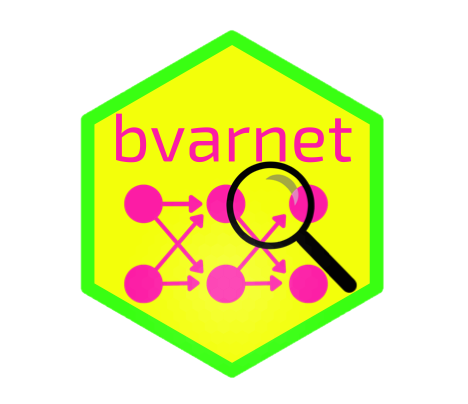

Set up bvarnet's precompiled Stan models
Source:R/download_models.R
bvarnet_setup_models.Rdbvar() requires compiled Stan model executables. When installing from a
CRAN/r-universe binary (no CmdStan at install time) they are not built
automatically, so this function sets them up: either by downloading
precompiled, toolchain-free binaries for your platform, or by compiling
them locally with your own CmdStan installation. Either way the result is
cached in a per-user cache directory (see bvarnet_model_cache_dir()) and
persists across sessions.
Usage
bvarnet_setup_models(
method = c("download", "compile"),
force = FALSE,
ask = interactive()
)Arguments
- method
"download"or"compile". If omitted, and the session is interactive, you are prompted to choose.- force
Logical. If
TRUE, clear the current cache entry first and set up from scratch.- ask
Logical. Whether to prompt for confirmation before downloading or compiling. Defaults to
interactive(). WhenFALSE, a download is only performed if pre-authorised viaoptions(bvarnet.allow_download = TRUE)or theBVARNET_ALLOW_DOWNLOADenvironment variable.
Details
Downloaded binaries are only ever fetched over HTTPS from this package's official GitHub repository, and are verified against a published SHA-256 checksum before being made executable; a mismatch aborts and deletes the download. The download is also pinned to a hash of your installed package's Stan sources, so a binary can never silently be paired with the wrong model version.
bvar() itself never downloads or prompts – all network activity happens
here, in this explicitly user-invoked function, so scripts and
non-interactive sessions never trigger a download by surprise.
See also
bvarnet_model_cache_dir() to inspect where models are cached,
bvarnet_clear_model_cache() to remove a cached entry, and bvar() for
the function that uses the resulting models.
Examples
if (FALSE) { # \dontrun{
# Interactive: prompts you to choose download vs. compile
bvarnet_setup_models()
# Non-interactive / scripted, pre-authorised for download:
options(bvarnet.allow_download = TRUE)
bvarnet_setup_models(method = "download", ask = FALSE)
# Force a clean re-setup (e.g. after a corrupted cache)
bvarnet_setup_models(method = "download", force = TRUE)
} # }